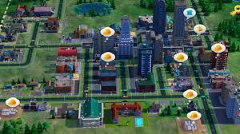
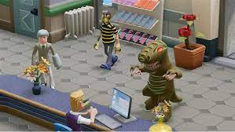
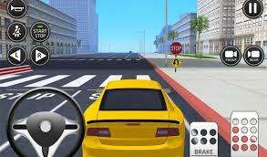

Los videojuegos de simulación reproducen sensaciones que en realidad no están sucediendo. Pretenden reproducir tanto las sensaciones físicas (velocidad, aceleración, percepción del entorno) y una de sus funciones es dar una experiencia real de algo que no está sucediendo para de esta forma no poner en riesgo la vida de alguien.
  
Los primeros simuladores que ha conocido el hombre surgieron en los años 1960. Su principal misión era preparar mejor a los pilotos de aviación. Hoy en día se puede decir que son indispensables.
Se les considera pequeños juegos ya que no son reales. La función de los simuladores es aproximarse lo más posible a la realidad. El bajo coste de esta herramienta de aprendizaje ha simplificado su expansión.